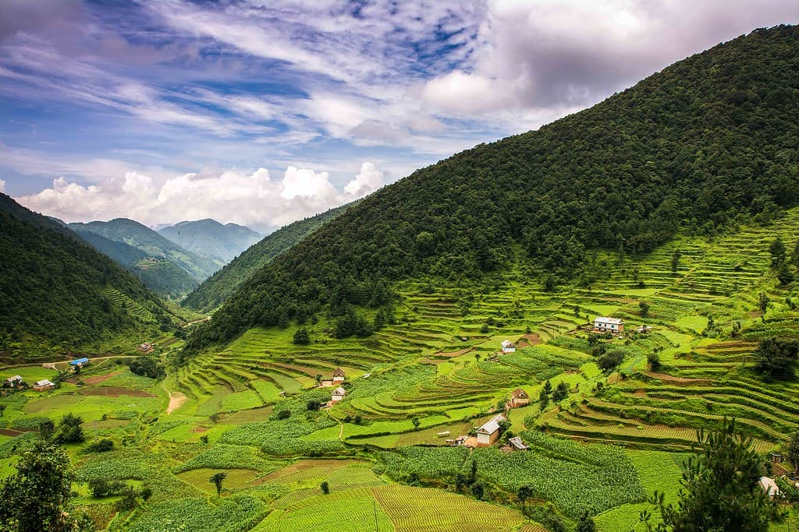
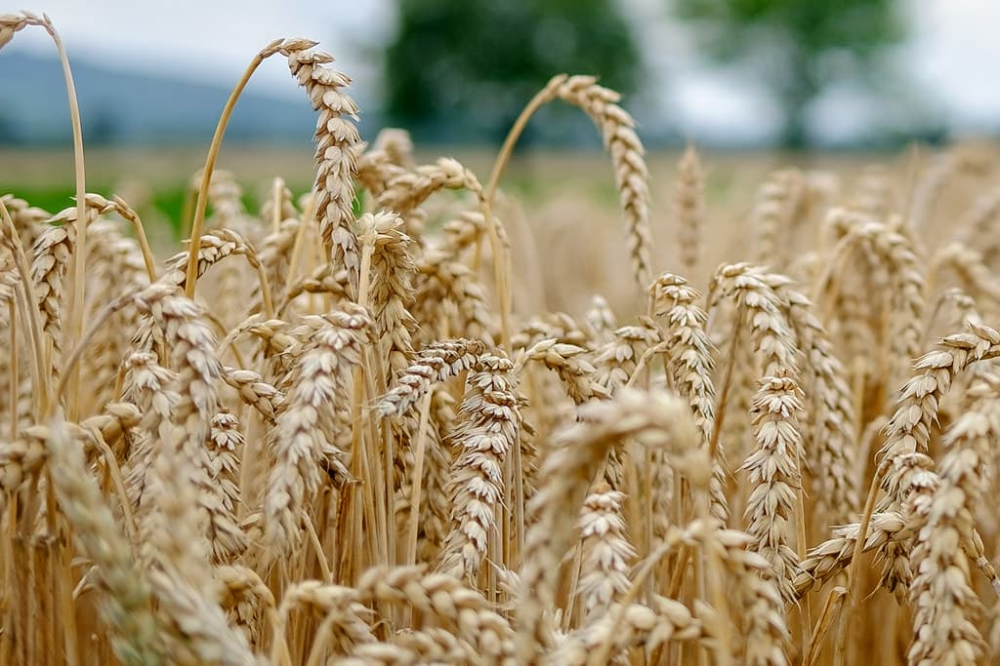
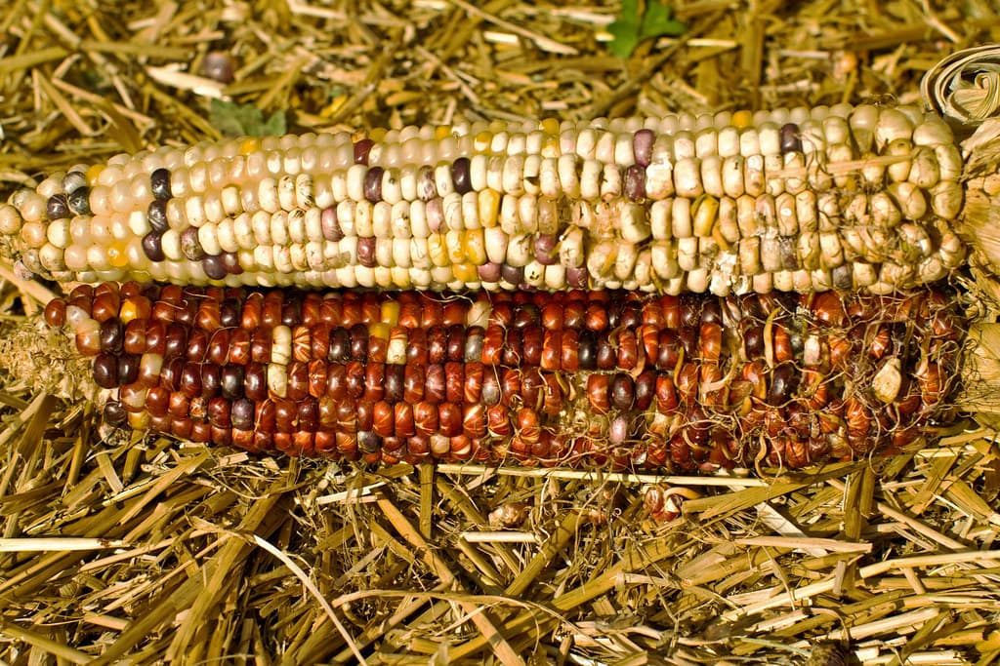
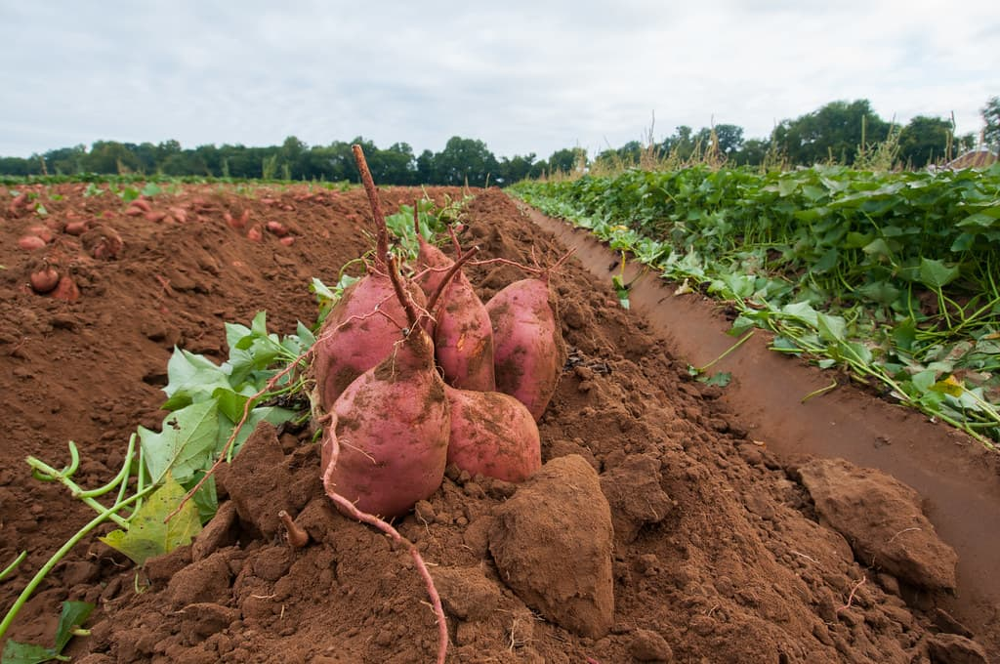
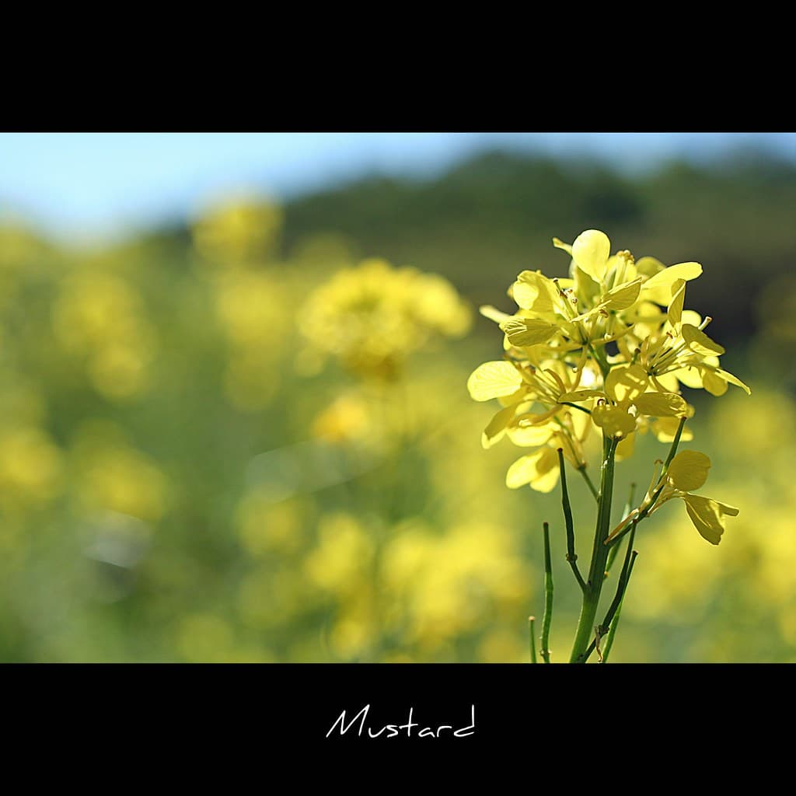
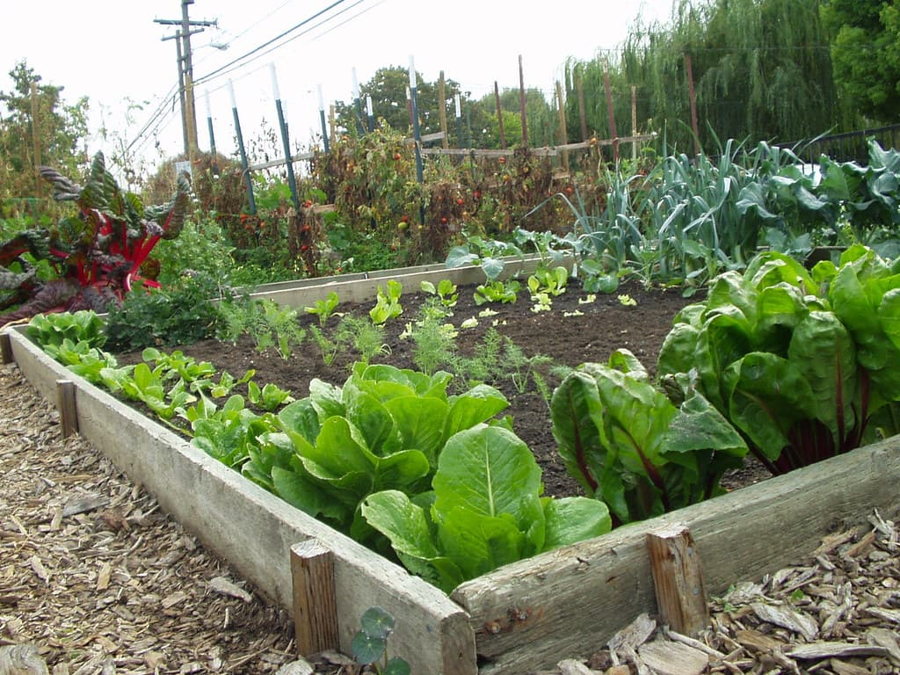

Rice
Rice is the main monsoon-season crop cultivated on a seasonal cycle at Yagya Krishi Udhyog. Planting and harvesting follow the annual rainfall…
Crops
Vegetables, grains and legumes matched to summer, winter and year-round windows — with indicative planting and harvest timing for planning.
Showing 6 of 6

Rice is the main monsoon-season crop cultivated on a seasonal cycle at Yagya Krishi Udhyog. Planting and harvesting follow the annual rainfall…

Wheat is grown as a winter-season crop, following the rice cycle on the farm's seasonal calendar. Harvest timing and produce availability depend on…

Maize is cultivated in more than one window across the year, which makes it one of the more regularly available crops on the farm. Actual cob and…

Potato is the farm's main winter vegetable crop, planted after the monsoon and harvested before spring. Availability of produce for sale varies with…

Mustard is grown as an oilseed crop during the winter season and is part of the farm's crop rotation. Seed and produce availability is seasonal;…

A rotating selection of seasonal vegetables grown according to the planting calendar. The specific vegetables, their growing stages and availability…
Try a different search term or clear the filters.